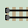

Universal Computer
Each of the example layouts shown so far has been specifically designed to carry out a single function. A computer layout would be able to carry out many different functions by following a series of programmed steps. Different examples could be run by simply changing the program.
The computer uses a 'library' of built-in functions. We've already seen these layouts over the preceding pages. The functions are stacked one above the other, allowing common registers points to be linked together so data can be shared.
Program Loop
Any function can be 'called' from the main program loop. This will be 'programmed' (built) to carry out the requirements of each particular program, as a series of subroutine calls. Once each task is complete, the train returns back along the same track. We've already seen the idea of a program loop with sprung point subroutines.
At least one subroutine function will need to detect when the calculation is complete and return the train to its starting position. Without a 'Halt' condition, the program will run forever. In theory, the program loop will be the only difference between any two computer layouts. In practice, to save space, only functions which are used will be shown in the library stack, so each layout will be different. MultiplexerTo saves a multitude of parallel tracks, we'll employ a multiplexer. The circuit shows a 4-way multiplexer which connects the upper program loop with four lower functions. If the train enters on line 2, it switches the two sets of linked points before travelling down the single vertical connecting line. The linked points ensure the train is delivered to the correct function. It then returns back along the same track. |
|
| Click layout to pause/run train | Click points to switch 0/1 | Click start circle to reset train/points |
Error Line 
Most computer layouts include a vertical error line. This allows functions to return any overflow errors to an error siding back at the station. This saves time scanning a large layout for a train that may have stopped in an error siding somewhere. Unused Mux lines, Comparator outputs (usually C>n) are also returned as errors.
Reset

To ensure accurate and repeatable results, it is important that all points are reset to their initial positions before each new calculation. Click the start circle to reset the train and again to reset all points.
Alternatively, some layouts incorporate a combined 'Clear & error' line, which clears registers before each new computation. It adds time and track area though. It is added to an example Triangular Number layout. Essential for a real train track layouts but over complex for a web page where all points can be easily reset to 0.
Alan Turing
Due to the Turing Halting conjecture, we can never prove that a train will return from a complex layout. If it becomes trapped in an infinite loop, the calculation will carry on forever and never return an answer. It may have no answer. The calculation may not be computable. The computer layouts on the next few pages are small enough to check that there are no loops to trap the train. |

Alan Turing |